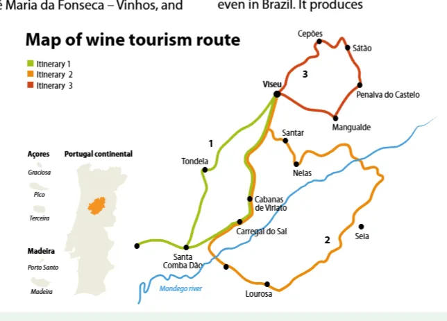
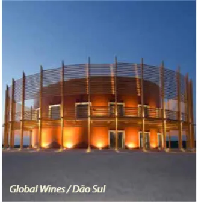
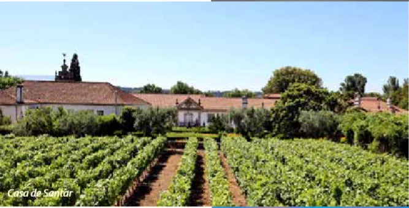

Kapitel 4 · Die portugiesischen Weinregionen
Weinregion Dão und Lafões
Kennzahlen (2022)
Rebfläche: 13.409 ha
Gesamterzeugung: 2.792.000 Liter
Die DOs Dão und Lafões gehören zu der Region, die heute die Bezeichnung Terras do Dão trägt.
Geschichte
Aus der klassischen Antike gibt es im Dão nur wenige Spuren des Weinbaus, doch wurden 80 kleine, in den Fels gehauene Weinpressen verschiedener Bauart, Größe und Epoche gefunden. Mit den Zisterziensermönchen gibt es ab dem 12. Jahrhundert Urkunden und Dokumente. Ab dem 15. Jahrhundert belegen viele Schriftstücke Qualität und wirtschaftliche Bedeutung des Dão-Weins. Weil die Reblaus die Hochebene der Region erst spät erreichte, erlangte der Rebbau hier seine größte Bedeutung – anders als in den Weinbauregionen, die von den amerikanischen Plagen bereits zerstört waren. 1865 warb António Augusto Aguiar für die Abgrenzung der Region, stieß wegen der instabilen politischen Lage aber auf Schwierigkeiten. Die Abgrenzung erfolgte erst 1908, wurde 1910 überarbeitet und 1912 erneut, als mit der Gründung der „Comissão Reguladora do Vinho do Dão“ (Regulierungskommission für Dão-Wein), wie sie damals hieß, die heutigen geografischen Grenzen der DO festgelegt wurden. Die umbenannte Comissão Vitivinícola Regional do Dão – CVRD (Regionale Weinbaukommission des Dão) wurde offiziell als Zertifizierungsstelle anerkannt, die Erzeugung, Handel und Zertifizierung der Weine mit Ursprungsbezeichnung DO Dão oder DO Lafões bzw. geografischer Angabe IG Terras do Dão regelt. 1912 bestätigte die Gesetzgebung die Abgrenzung im heute als IG Terras do Dão bezeichneten Gebiet (entsprechend der früheren Beira Alta und der IG Beiras).
Terroir
Klima nach Köppen-Geiger:
Csb (feuchtgemäßigt). Ein zwar gemäßigtes Klima, im Winter jedoch sehr kalt und regnerisch und im Sommer häufig sehr trocken und heiß, mit sehr kalten Nächten und mäßiger Trockenheit.
Indizes des MCC-Systems (Tonietto & Carbonneau, 2004): heliothermischer Index (HI): −1, Kühle-Nacht-Index (CI): +2, Trockenheitsindex (DI): +1. Die Serra da Estrela schützt die Region vor iberisch-kontinentalen Einflüssen. In der Nähe der Berge besteht im April Spätfrostgefahr, und während der Blüte ist das Wetter unbeständig mit möglichen Gewittern und sogar Hagel.
Niederschlag: 1.200–1.300 mm, davon 80 % zwischen Oktober und April.
Geologie: Orografisch ist die Region eine von den Bergen Caramulo und Buçaco umgebene Hochebene, vor Meereswinden geschützt. Sie liegt im mittleren Norden Portugals in einer gebirgigen Enklave; im Norden ragen die mächtigen Gebirgszüge Nave und Serra da Estrela auf, die eine wichtige Barriere gegen die feuchten Küstengebiete und die rauen kontinentalen Winde bilden.
Höhe der Weinberge: bis 800 Meter (vereinzelt 1.000 Meter) in der Serra da Estrela und 200 Meter in tiefer gelegenen Gebieten.
Die Weinbergsböden sind wenig fruchtbar, überwiegend granitischen Ursprungs, mit Flecken präkambrischen Schiefers. Oft sind sie feucht und fruchtbar. Die IGP Terras do Dão umfasst auch die Unterregion, die die ergänzende Ursprungsbezeichnung Terras de Lafões tragen darf.
Erzeugte Weintypen
IG Terras do Dão bzw. Landwein Terras do Dão:
Rot, Weiß, Rosé, Schaumwein.
Unterregion „Terras de Lafões“:
Rot, Weiß, Rosé, Schaumwein.
DO-Dão-Weine (VQPRD): Rot (Garrafeira, Reserva), Nobre, Novo, Clarete, Weiß, Rosé.
DO-Dão-Schaumweine (VEQPRD)
DO-Lafões-Weine (VQPRD): Rot, Weiß.
Regionale Kontakte
Technische Informationen: Comissão Vitivinícola Regional do Dão (Regionale Weinbaukommission des Dão) – Solar do Vinho do Dão, Rua Dr. Aristides de Sousa Mendes, Fontelo, 3501-908 Viseu, Tel. 232 410 060, E-Mail: info@cvrdao.pt,
Website: www.cvrdao.pt
Kulturelle Informationen zum Wein der Region: Confraria dos Enófilos do Dão (Bruderschaft der Dão-Weinfreunde), Solar do Vinho do Dão, Rua Dr. Aristides de Sousa Mendes, Fontelo, 3501-908 Viseu
E-Mail: info@cvrdao.pt,
Website: www.cvrdao.pt
Informationen zu Erzeugern und Abfüllern:
http://www.ivv.min-agricultura.pt/np4/1736.html, Jahrbuch 2011, S. 169–174.
Zertifizierungsstelle: Comissão Vitivinícola Regional do Dão, Solar do Vinho do Dão, Rua Dr. Aristides de Sousa Mendes, Fontelo, Apt. 10, 3501-908 Viseu – Tel.: 232 410 060, Fax: 232 410 065 – www.cvrdao.pt – E-Mail: info@cvrdao.pt
Weintourismus: Dão-Weinroute (im selben Gebäude wie die Weinbaukommission), Rua Dr. Aristides de Sousa Mendes, Fontelo, 3501-908 Viseu, Tel. 232 410 060, E-Mail: info@cvrdao.pt, Website: http://www.quintadoriodao.com

Botanik (Biodiversität) und zugelassene Sorten für IG Terras do Dão und IG Terras de Lafões
Sorten:
Rechtsgrundlage: Verordnung Nr. 155/2014 vom 7. August, Verordnung Nr. 378/2017 vom 18. Dezember und Gesetzesdekret Nr. 212/2004 vom 23. August.
Rotweine: Água Santa, Alfrocheiro (Tinta Bastardinha), Alicante Bouschet, Alvarelhão (Brancelho), Amaral, Aragonez (Tinta Roriz, Tempranillo), Baga, Bastardo (Graciosa), Cabernet Franc, Cabernet Sauvignon, Camarate, Campanário, Castelão, Cidreiro, Coração de Galo, Cornifesto, Grand Noir, Jaen (Mencía), Malvasia Preta, Marufo (Mourisco Roxo), Merlot, Monvedro, Moreto, Mourisco, Pilongo, Pinot Noir, Português Azul, Rufete (Tinta Pinheira), Syrah (Shiraz), Tinta Carvalha, Tinta Francisca, Tintem, Tinto Cão, Touriga Fêmea, Touriga Franca, Touriga Nacional, Trincadeira (Tinta Amarela, Trincadeira Preta), Vinhão (Sousão), Alvar Roxo, Folgasão Roxo, Gewürztraminer und Malvasia Fina Roxa.
Weißweine: Alicante Branco, Alvar, Alvarinho, Arinto (Pedernã), Arinto do Interior, Assaraky, Azal, Barcelo, Bical (Borrado das Moscas), Branda, Cerceal Branco, Cercial, Chardonnay, Douradinha, Encruzado, Esganoso, Fernão Pires (Maria Gomes), Folgasão, Folha de Figueira (Dona Branca), Fonte Cal, Gouveio, Jampal, Loureiro, Luzidio, Malvasia Fina, Malvasia Rei, Moscatel Galego Branco (Muscat à Petits Grains), Pinot Blanc, Rabo de Ovelha, Riesling, Sauvignon (Sauvignon Blanc), Semillon, Sercial (Esgana Cão), Sercialinho, Síria (Roupeiro, Códega), Tália (Ugni Blanc, Trebbiano Toscano), Tamarez (Molinha), Terrantez, Uva Cão, Verdelho, Verdial Branco, Viosinho und Vital.
Renommierte Weingüter
in der Region:
Die Struktur der Dão-Kellereien ist durch ihre Weinbaugeschichte vorgezeichnet. Früher waren es im Wesentlichen die großen Weinkonzerne, die die Dão-Weine vertrieben, mit der ältesten Tradition eines amtlich abgegrenzten Qualitätsweins mit DO. Unternehmen wie Sogrape und José Maria da Fonseca – Vinhos und

Unterregion Serra da Estrela · Unterregion Terras de Senhorim · Unterregion Terras de Azurara
IG Terras de Lafões
DO Lafões
andere nutzten mit ihrer guten Handelsstruktur eigene Marken und Kellereien, um Trauben aus der Region zu verarbeiten, oder kauften bei einem großen Netz von Genossenschaften, die traditionell Fasswein lieferten. Global Wines/Dão Sul: Über Dão Sul ist Global Wines das führende Privatunternehmen im Dão. Es hat auch Kellereien in der Bairrada und im Alentejo und erzeugt jährlich 7 Millionen Flaschen aus den 600 ha Weinbergen, die es bewirtschaftet, davon rund 150 ha in Brasilien, insgesamt 30 ha für Bioweine. Das Unternehmen setzt auf Forschung, Entwicklung und Innovation und gründete 2003 ein Zentrum für angewandte Forschung. Der Weintourismus ist gut entwickelt und geführt. Es ist Partner der Quinta das Tecedeiras – Sociedade Vitivinícola, Lda. im Douro, übernahm die Quinta do Encontro – Sociedade Vitivinícola, Lda. in der Bairrada und ist Partner der Gradil – Sociedade Vitivinícola, Lda. in der Region Lisboa. Es schuf die Quinta de Cabriz, Sitz der Zentrale und Aushängeschild des Weintourismus. Ein wichtiger Teil ist Wines of Brazil S.A. mit Erzeugung im São-Francisco-Tal (Brasilien), ebenso die Herdade Monte da Cal – Alentejo Wines, S.A. im Alentejo. Adega Cooperativa de Penalva do Castelo: Diese Winzergenossenschaft mit 1.000 Mitgliedern erhält jährlich Trauben von mehr als 1.200 Hektar Weinbergen, erzeugt im Mittel zehn Millionen Liter Wein und verfügt über modernste Technik für Weinbereitung, Ausbau und Abfüllung – ein führender Dão-Betrieb. Die Genossenschaft hat das Unternehmen Paço de Santar – Vinhos do Dão, S.A. eingegliedert. Quinta da Taboadella, Boas Quintas.




Palácio dos Condes de Anadia – Mangualde, Viseu. Quinta da Vegia. Quinta Nova de Nossa Senhora (im Besitz der durch Kork bekannten Familie Amorim) mit 40 ha Weinbergen. Die Adega Cooperativa de Mangualde hat 400 aktive Mitglieder und eine Kapazität von 6.000 Tonnen Trauben. Adega Cooperativa de Vila Nova de Tázem, Casa Cardozo de Menezes, Lda., Casa da Ínsua, Casa da Passarella, Casa da Peneirada, Casa de Santar, Quinta da Alameda, Quinta da Bica, Quinta da Pellada, Quinta da Turquide, Quinta do Cerrado, Quinta do Giestal, Quinta do Loureiro
Quinta dos Roques, Quinta de Caminhos Cruzados, Nelas